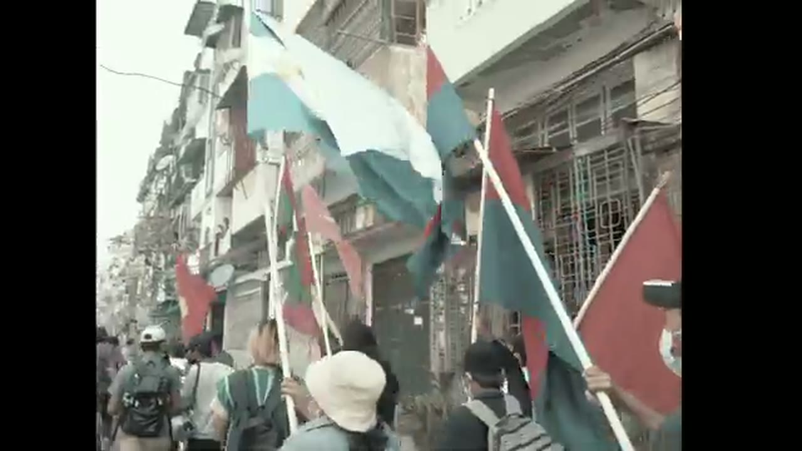
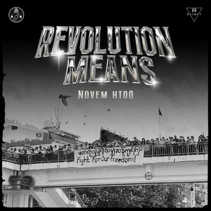
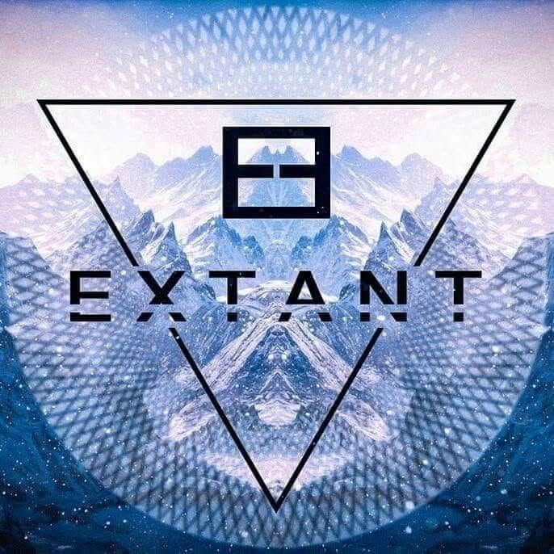
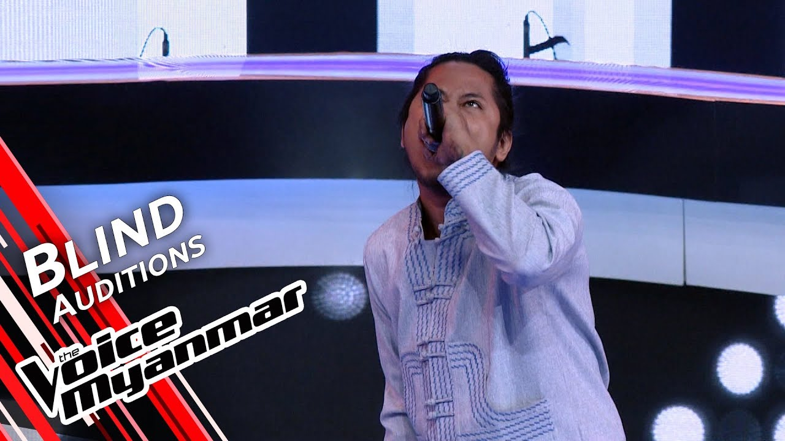
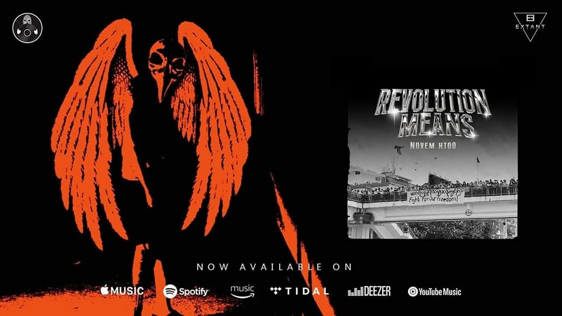
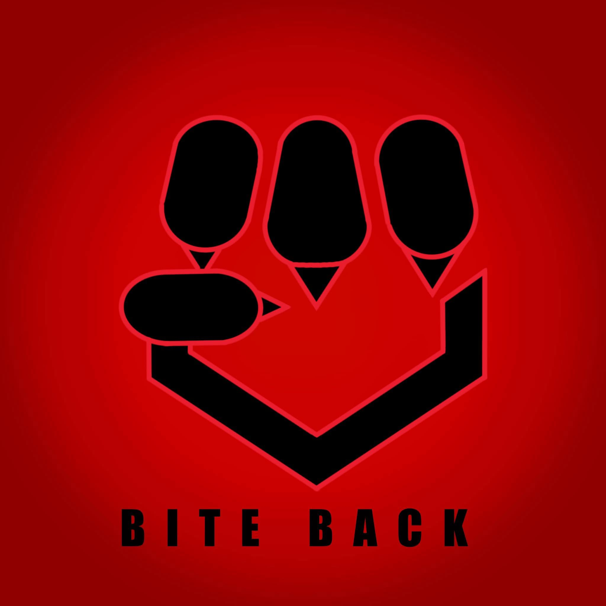
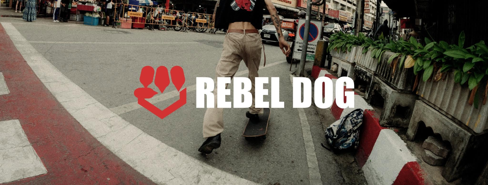

01
Six songs, one story
A concept record rather than a singles run — the first time the band has written to a single arc from end to end.
Yangon, Myanmar // Est. 2015 // Djent & Metalcore
They left the scene, the crowd, and the place they called home.
Being away didn't end the music — it changed it.
01 — The Return
Announced August 2026
/haɪ jɑːr/ — a traditional Burmese boxing cry, shouted before the fight.
“We're back.”
EXTANT, August 2026
There was a time the band had to leave — the scene, the audience, and the place they called home. For a while the distance between EXTANT and the people who listened to them grew wider than any of them expected.
It didn't end the music. It changed it. The band returns with a new sound, a six-song concept album, and a cry that runs the length of the record: HAIYAR. Shouted before the fight, not after it.
This is the return. And it is only the beginning.
01
A concept record rather than a singles run — the first time the band has written to a single arc from end to end.
02
The band's own framing for the turn: a new direction, and a raw, unfiltered sound they have never made before. The Rubicon is the river you only cross once.
03
Written, tracked, mixed and mastered inside the band — PZ on the desk, the same room that produced P Tripper.
04
Teasers, studio clips and singles go out through the band's own page and channel. No label pipeline in between.
No release date announced yet — singles are landing first. P Tripper is out now.
02 — Latest Drop
Out now
The first single of the return, and the loudest thing EXTANT has put on tape. Tracked, mixed and mastered in-house by PZ, shot and cut by No Worries with camera by FAT CAT. Five thousand plays inside the first day.
Available on Spotify, YouTube & all major streaming platforms.
03 — Records
Albums and singles under the EXTANT name, plus Novem Htoo's solo output. Where a record is still rolling out, only what the band has confirmed is listed here.
Concept album · Announced Aug 2026
Six songs, one arc, and a new sound built in exile. Framed by the band as crossing the Rubicon — a turn they can't walk back.
Read the story ↓
2026Album
The record behind Back Off, mixed and mastered by TheBigBoyToy with lyrics translated by U Day. Video presented by Mi Joya Pictures.

2023Single · Novem Htoo
Released on Burmese Guerrillas with Artists' Shelter, featuring The BigBoyToy and Japan (Idiots). Out on Apple Music, Spotify, Tidal, Deezer and YouTube Music.
Listen on Spotify ↗Single run · Burmese
Untie The Knot, Vengeance, This Is The War and Disregard — four Burmese-language releases in three months, mixed by Ko Ye Zaw Myo (Big Bag). Still the band's most-played material.
04 — The Vault
Every official upload on the EXTANT channel, with titles, dates, running times and credits taken from the videos themselves. Previews are hosted here — hover a card on desktop, or bring it to the middle of the screen on mobile. Click for the full video with sound.
Nothing in this cut of the vault.
05 — The Unit
The lineup credited on every release since Dog Eat Dog. Production stays inside the room — PZ mixes and masters the band's own records.
Vocals
Underground metalist since 2010, and the voice that put Burmese metal on national television — winner of The Voice Myanmar in 2019 after auditioning with a Slipknot song. Writes in Burmese, sings in both.
Bass · Production
Low end and the desk. Mixes and masters the band's recent output, including P Tripper, Dog Eat Dog and Main Character Syndrome.
Guitar
Riffs, drop tunings and the djent-leaning rhythm work that anchors the newer material.
Drums
Kit and groove. Also credited as a featured player on Novem Htoo's 2023 solo single Revolution Means.
Regular crew No Worries · FAT CAT · Ko Kaung · Latt Pan Ni Production · Myo Wai Yan · Mi Joya Pictures · TheBigBoyToy · Ko Ye Zaw Myo (Big Bag)
06 — History
Founded in Yangon in 2015. What follows is drawn from the band's public channel, page and press.
2015
A five-piece built out of Myanmar's underground metal circuit, playing djent and metalcore in a scene dominated by pop and rock.

2019
The band's vocalist takes a national TV singing contest into unfamiliar territory, auditioning with Slipknot's Spit It Out and winning the season — a deliberate move to put metal in front of the whole country.

2020
Four releases in three months — Untie The Knot, Vengeance, This Is The War and Disregard — mixed by Ko Ye Zaw Myo (Big Bag). This Is The War becomes the band's most-played upload.
2021
A live set from the TGIF show in Taunggyi lands in January. The coup follows in February. The band later described having to leave the scene, the audience and the place they called home — and the distance that opened up between them and the people who listened.
2023
Novem Htoo releases a solo single on Burmese Guerrillas in collaboration with Artists' Shelter, featuring The BigBoyToy and Japan (Idiots) — out across Apple Music, Spotify, Tidal, Deezer and YouTube Music.

2025
Dog Eat Dog and Main Character Syndrome arrive five days apart in November — the first proper music videos with the current four-piece lineup, shot with Ko Kaung on photography and Latt Pan Ni Production on lights.
2026
Back Off lands in May off the Aggressive Evolution record. P Tripper follows on 29 August and clears five thousand plays in a day. Days later the band announces the return: a six-song concept album carrying the HAIYAR cry.

07 — Merch
The streetwear arm around the band — graphic tees and carry built for the everyday, with the politics left in. Run out of Tak, on the Thai border. “If you dare to stand up for what is right, you are welcome here.”

Tee
Bold graphic print designed to deliver an unapologetic street aesthetic.
Tee
A graphic tee representing Daw Aung San Suu Kyi and her unbroken spirit.
Tee
Let your tee do the talking when you want your voice heard.
Carry
Built with maximum street vibe for your everyday carry.
REBEL DOG runs an ongoing editorial series on where street culture actually came from, published to the page alongside the drops.
Fact of the month
The original oversized silhouette, and the first time baggy clothing was treated as a political act.
Place
The legendary store where Fujiwara, NIGO and Jun Takahashi changed youth culture for good.
People
How Hiroshi Fujiwara and NIGO rewrote global streetwear — limited drops, collaborations, exclusivity.
Home
Myanmar's own line of protest, and why the brand still reads “still biting back”.
12K followers · Orders run through the REBEL DOG page — mmrebeldog.com is registered but not live yet.
08 — Booking & Contact
Festivals, gigs, features, press. Reach the band through the official page, or the merch line for anything REBEL DOG.